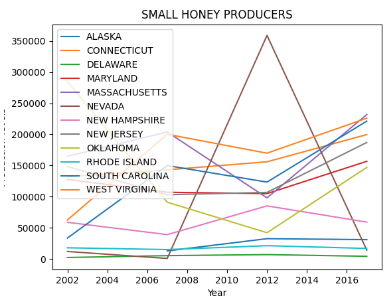
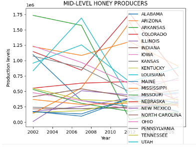
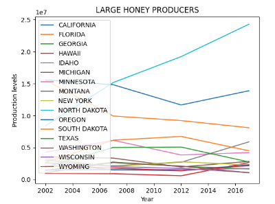

Portfolio
Home
Portfolio
About Me
This is my Portfolio Page!
Minion Maker: my first project. This was really fun to play with because I could choose what I wanted to customize on the minion. It was satisfying to see the project finished as well. I had the most trouble with importing the banana picture into VS Code, because I didn't know how to do it at first. I finally figured out that for the image to be a turtle shape, the image has to be a gif. I'm proud of how the project turned out overall. The player can customize the minion to be good/evil, have one/two eyes, formal/festive hat, and 5 facial expressions. At the end, a banana falls from the top of the screen and the customizer is finished.
Dino Game: the objective of the game is to collect as many coins as you can in the time period while avoiding the obstacles. It was a fun game to make, but it was hard to figure out collisions.
Dot Parkour: we made this game on scratch. Scratch was easier to work with because it was block code, and I felt like I was better equipped to customize game mechanics the way I wanted it to. Adding sounds, animations, and movement was much easier to code. I really like how the end product came out to be, with the different themes and maps.



PLTW 3.2.4 Project: we sorted the data of bee production in the US over the last decade or so. We saw an overall trend of increasing production. We coded to sort the data, and created different plots to make the data easier to read in a graph. We separated them by small, mid, and large honey producing states.